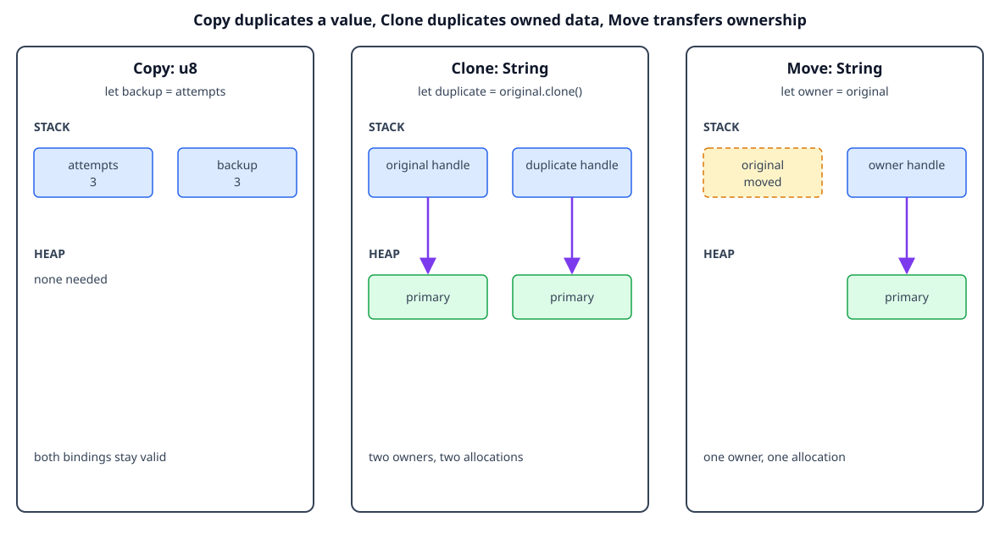

Copy and Clone
By the end, you will be able to
- Explain why simple values such as integers can be copied automatically.
- Distinguish an implicit
Copyfrom an explicitclone(). - Recognize that cloning heap-backed data can allocate and copy data.
- Use
#[derive(Clone)]when a type has a meaningful duplication operation.
Copy: small values can have two bindings
Some types have a simple, fixed-size representation and no resource that needs
special cleanup. These types can implement Copy. Assignment copies the value,
so both bindings remain valid:
let attempts = 3_u8;
let backup_attempts = attempts; // The number is copied.
println!("{attempts}");
println!("{backup_attempts}");
The compiler knows that copying a u8 does not create two owners of the same
heap allocation. Common Copy types include integers, floating-point values,
booleans, characters, and tuples made only from Copy types.
Checkpoint 1
Why can the code use both attempts and backup_attempts?
Clone: an explicit duplicate
String does not implement Copy because copying its handle would duplicate
the ownership of one heap allocation. It does implement Clone, which makes a
separate copy when you ask for one:
let original = String::from("primary");
let duplicate = original.clone(); // Explicitly copy the heap text.
println!("original: {original}");
println!("duplicate: {duplicate}");
After clone(), each String owns a different heap allocation. The operation
can be more expensive than a move because it copies the characters and may
allocate memory. That explicit cost is useful: the code shows that two owners
are intentional.

The diagram is conceptual. It shows ownership relationships, not literal addresses or the exact internal representation of a Rust value.
Checkpoint 2
What does original.clone() provide for a String?
Clone for structs
A type can derive Clone when each of its fields can be cloned. The generated
implementation clones each field, so the String field gets its own heap copy:
#[derive(Clone, Debug)]
struct Settings {
retries: u8,
label: String,
}
let settings = Settings {
retries: 3,
label: String::from("demo"),
};
let settings_copy = settings.clone();
The u8 field is cheap to copy, while the String field performs a heap-data
clone. Deriving Clone is convenient, but it should still match the meaning of
duplicating the type in the program.
Checkpoint 3
What happens when settings.clone() is called?
Choose the operation that expresses intent
Use a move when one owner should continue with the value. Use Copy when a
small value naturally has independent duplicates. Use clone() when two
owners need independent heap-backed data and the copy cost is acceptable. If a
function only needs temporary access, borrowing is often better than either a
move or a clone.
Checkpoint 4
Why is clone() explicit for a heap-backed type?
Complete runnable example
The lesson displays the same source file used by the matching demo:
#[derive(Clone, Debug)]
struct Settings {
retries: u8,
label: String,
}
fn main() {
let attempts = 3;
let backup_attempts = attempts; // `u8` is Copy, so both bindings stay usable.
println!("attempts: {attempts}, backup: {backup_attempts}");
let original = String::from("primary");
let duplicate = original.clone(); // Explicitly copy the heap text.
println!("original: {original}, duplicate: {duplicate}");
let settings = Settings {
retries: attempts,
label: String::from("demo"),
};
let settings_copy = settings.clone(); // Derive Clone deep-copies its fields.
println!("settings: {settings:?}");
println!("settings copy: {settings_copy:?}");
println!("fields: retries={}, label={}", settings.retries, settings.label);
}
Run it from the repository root:
rustc examples/02-ownership-and-borrowing/03-copy-and-clone/main.rs \
-o /tmp/rust-copy-clone
/tmp/rust-copy-clone
Expected output:
attempts: 3, backup: 3
original: primary, duplicate: primary
settings: Settings { retries: 3, label: "demo" }
settings copy: Settings { retries: 3, label: "demo" }
fields: retries=3, label=demo
Exercise
- Remove
Clonefrom theSettingsderive and compile the demo. Read the compiler error fromsettings.clone(). - Replace
original.clone()withlet duplicate = original;. Observe which binding becomes unusable. - Add a
boolfield toSettingsand clone it again.
Checkpoint 5
Which statement best summarizes the difference between move, Copy, and Clone?
Next
Continue with shared borrowing to let functions read a value without taking ownership or allocating a clone.